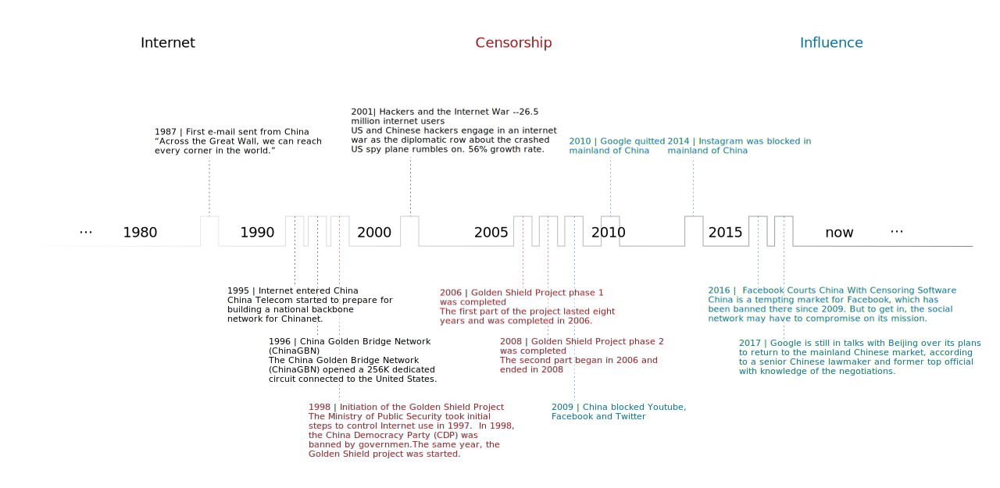

Visualizing Invisible Wall
Using social network data for public opinions comparision
History of Internet Censorship Development in China

Case Study
1 – Choose a Topic
2 – Look up amount of total tweets
Sina Weibo
Tweets
Twitter
Tweets
3 – Word Frequency Comparison
tweets-count:
freq-score:
words:
words:
4 – Tweets Content Lookup